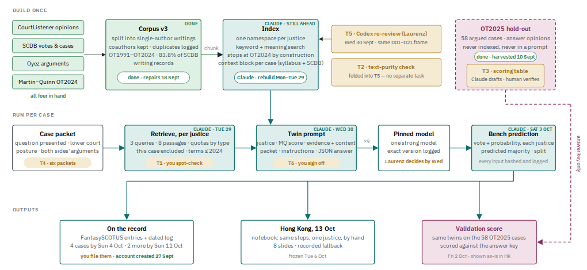
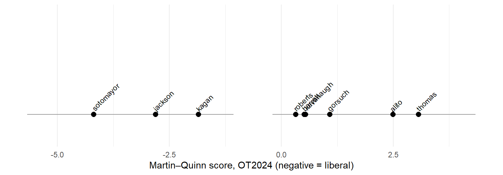
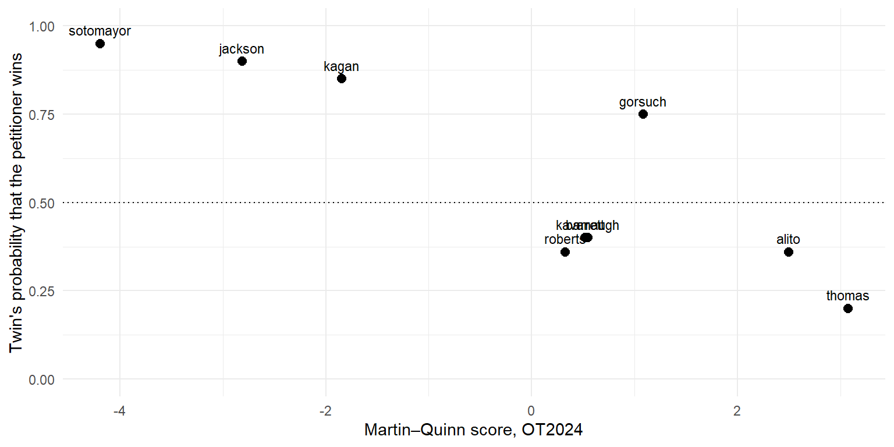

Notebook 1 — A justice twin, one case, by hand
LLMSS 2026, Workshop 3 (The Silicon Audience), Silicon Jury block · Hong Kong, 13 October 2026
What you will do
A justice twin is a language model asked to answer as one Justice of the United States Supreme Court would, given passages from that Justice’s own opinions and a short description of a case the Court has not yet decided. The Legal Digital Twins project runs nine such twins on every case of the October 2026 sitting and files their votes on FantasySCOTUS before the case is argued. In this notebook you run one of those twins yourself, in about twenty-five minutes:
- read the case: the one-page packet the twin is asked about;
- meet the justice: who the twin is, and the one number that summarises their voting record;
- open the evidence: the eight passages retrieved from that Justice’s own opinions, already found for you;
- assemble the prompt: exactly what the model receives, line by line;
- ask the twin: load the answer from the project’s own run, or send the prompt yourself;
- sit the full bench: nine twins, one predicted outcome, compared with what the Court actually did (practice case) or with the crowd (live case);
- change one thing and see what moves.
Only Section 5 calls a language model, and only if an API key is set. Everything else runs offline from the files beside this notebook.
How to read this notebook. As in Workshops 1 and 2, every table, text block and figure the code prints has a number, given in bold just above the code that prints it, and the text says which table, row or column a number comes from.
Figure 1.0. The whole machine. This notebook walks the middle row, for one justice and one case, with the top row already built.
The first block loads the packages the notebook uses and sets the folders it reads from and writes to.
library(data.table)
library(jsonlite)
library(ggplot2)
DATA <- file.path("..", "data")
OUT <- file.path("..", "output")
dir.create(OUT, showWarnings = FALSE)1. The case
Two cases ship with the notebook. The practice case was argued in November 2025 and decided in June 2026, so we can check the twins against the Court. The live case is argued on 5 October 2026 and will not be decided until next year; the project’s prediction for it was filed on 4 October. Start with the practice case; Section 7 switches to the live one.
The block below loads the case index as cases and prints it.
Table 1.1. cases: the two cases in the package.
cases <- fread(file.path(DATA, "cases.csv"))
cases[, .(slug, title, docket, term, argued, role)]| slug | title | docket | term | argued | role |
|---|---|---|---|---|---|
| landor | Landor v. Louisiana Department of Corrections | 23-1197 | OT2025 | 2025-11-10 | practice case: decided, outcome in data/landor_outcome.csv |
| johnson | Johnson v. United States Congress | 25-735 | OT2026 | 2026-10-05 | live case: argued 5 Oct 2026, undecided at the workshop |
The twin never sees a brief, an opinion or a news story. It sees a case packet: the question presented (verbatim from the Court), the lower court’s holding, the procedural posture and three arguments per side, assembled from the public record before argument and checked by a person so that nothing in it reveals an outcome. The next block sets CASE, loads that packet and prints it. Change CASE to "johnson" for the live case.
Text 1.1. The case packet for CASE, as the twin receives it.
CASE <- "landor"
packet <- paste(readLines(file.path(DATA, paste0(CASE, "_packet.md")), warn = FALSE),
collapse = "\n")
cat(packet)# Case packet — Landor v. Louisiana Department of Corrections, No. 23-1197
**Argued:** 2025-11-10 · **Sitting:** October Term 2025 · **Packet author:** auto (Oyez pre-decision fields; verifier initials: ____) · **Packet date:** 2026-09-30
**Sources used:** Oyez case record — `question` and `facts_of_the_case` as published before argument; lower court from the record. *No brief, no opinion, no post-argument material.*
**Parties:** Petitioner: Damon Landor · Respondent: Louisiana Department of Corrections and Public Safety
## Question(s) presented (as summarised by Oyez; the Court's QP list governs if they differ)
1. May an individual sue a government official in his individual capacity for damages for violations of the Religious Land Use and Institutionalized Persons Act (RLUIPA)?
## Facts and lower court (Oyez pre-decision summary)
Damon Landor, a devout Rastafarian, vowed as part of his faith never to cut his hair—a religious commitment known as the Nazarite Vow. Incarcerated in 2020, Landor was first held at the St. Tammany Parish Detention Center and later at LaSalle Correctional Center, both of which allowed him to maintain his hairstyle in accordance with his religious beliefs. After approximately five months and with three weeks left in his sentence, Landor was transferred to Raymond Laborde Correctional Center. Upon arrival, Landor proactively explained his religious practices and presented documentation of previous accommodations, including a copy of a federal court decision supporting similar claims. An intake guard disregarded his documentation, summoned the warden, and upon Landor’s inability to produce immediate additional proof of his beliefs, guards forcibly handcuffed Landor and shaved his head.
Following his release, Landor sued the Louisiana Department of Corrections and Public Safety, its Secretary James LeBlanc, the correctional center, and Warden Marcus Myers, asserting claims under the Religious Land Use and Institutionalized Persons Act (RLUIPA) and 42 U.S.C. § 1983 for violations of his federal constitutional rights, as well as state law claims.
The U.S. District Court for the Middle District of Louisiana dismissed Landor’s individual-capacity RLUIPA claims for money damages, holding such relief unavailable under controlling Fifth Circuit precedent. The U.S. Court of Appeals for the Fifth Circuit affirmed, relying on its prior decision in Sossamon v. Lone Star State of Texas, and rejecting Landor’s arguments that subsequent Supreme Court authority or other legal developments altered that result.
Lower court: United States Court of Appeals for the Fifth Circuit.
## Procedural posture
Certiorari granted 2025-06-23; argued 2025-11-10.
## Petitioner's core arguments (three bullets, from the merits brief)
- not included in this packet type (Oyez facts and question only)
## Respondent's core arguments (three bullets, from the merits brief)
- not included in this packet type (Oyez facts and question only)
## Doctrinal area / key precedents named in the QP or briefs
May an individual sue a government official in his individual capacity for damages for violations of the Religious Land Use and Institutionalized Persons Act (RLUIPA)?2. The justice
Each twin is one of the nine sitting Justices. The twin is told who it is, when and by whom it was appointed, and one number: the Justice’s Martin–Quinn score for October Term 2024, a statistical summary of their voting record on a scale where negative is liberal and positive is conservative. The score is a coarse prior; the evidence in Section 3 is what the twin reasons from.
The block below loads the nine scores as mq and prints them in order.
Table 2.1. mq: Martin–Quinn posterior means for October Term 2024 (official 2024 release), with the 95% interval.
mq <- fread(file.path(DATA, "mq_ot2024.csv"))
mq[, .(justice, post_mn, post_025, post_975)]| justice | post_mn | post_025 | post_975 |
|---|---|---|---|
| sotomayor | -4.191 | -5.675 | -2.796 |
| jackson | -2.809 | -3.979 | -1.801 |
| kagan | -1.844 | -2.734 | -1.068 |
| roberts | 0.326 | -0.196 | 0.883 |
| barrett | 0.515 | -0.035 | 1.089 |
| kavanaugh | 0.545 | -0.010 | 1.116 |
| gorsuch | 1.082 | 0.461 | 1.773 |
| alito | 2.496 | 1.585 | 3.551 |
| thomas | 3.070 | 2.036 | 4.342 |
Figure 2.1. The same nine scores drawn as a line, so the spread is visible.
mq[, justice := factor(justice, levels = justice)]
ggplot(mq, aes(x = post_mn, y = 1, label = justice)) +
geom_errorbar(aes(xmin = post_025, xmax = post_975), width = 0, orientation = "y", colour = "grey60") +
geom_point(size = 2.5) +
geom_text(angle = 45, hjust = -0.1, vjust = -0.3, size = 3) +
scale_x_continuous("Martin–Quinn score, OT2024 (negative = liberal)") +
scale_y_continuous(NULL, breaks = NULL, limits = c(0.9, 1.4)) +
theme_minimal()
The next block sets JUSTICE and loads everything the project prepared for that Justice on this case: the evidence, the context blocks and the two prompt messages. Change JUSTICE to any of the nine names in Table 2.1.
Text 2.1. Who the twin is.
JUSTICE <- "kagan"
ev <- fromJSON(file.path(DATA, paste0(CASE, "_evidence.json")), simplifyVector = FALSE)
tw <- ev$justices[[JUSTICE]]
cat(sprintf("%s, %s, appointed by %s, on the Court since %d.\nMartin–Quinn OT2024: %+.2f\n",
tw$name, tw$role, tw$appointed_by, tw$since, tw$mq_ot2024))Elena Kagan, Associate Justice, appointed by President Barack Obama, on the Court since 2010.
Martin–Quinn OT2024: -1.843. The evidence
The twin does not get the Justice’s whole record. For each case it gets eight passages, retrieved from an index of that Justice’s own opinions (October Terms 1991 to 2024, about 37,000 passages across the nine) by three queries written from the packet: the question presented, the doctrinal area and precedents, and the two sides’ first arguments. The retrieval has rules: at least two passages from majority opinions and two from separate writings, at most two from any one earlier case, nothing from the case at issue, nothing after October Term 2024. The retrieval has already been done; the eight passages for JUSTICE on CASE are in the file you loaded, together with a hash of the set so the run can be reproduced.
The block below turns the eight passages into a table and prints where they come from.
Table 3.1. passages: the eight passages retrieved for JUSTICE on CASE.
passages <- rbindlist(lapply(tw$passages, function(p)
data.table(n = p$n, case = p$title, term = p$term, type = p$doc_type, words = length(strsplit(p$text, "\\s+")[[1]]))))
passages| n | case | term | type | words |
|---|---|---|---|---|
| 1 | Camreta v. Greene | 2010 | majority_opinion | 339 |
| 2 | Michigan v. Bay Mills Indian Community | 2013 | majority_opinion | 307 |
| 3 | Knick v. Township of Scott | 2018 | dissent | 345 |
| 4 | Koontz v. St. Johns River Water Management Dist. | 2012 | dissent | 314 |
| 5 | Camreta v. Greene | 2010 | majority_opinion | 326 |
| 6 | Chiaverini v. City of Napoleon | 2023 | majority_opinion | 333 |
| 7 | Dunn v. Smith | 2020 | concurrence | 212 |
| 8 | Cyan, Inc. v. Beaver County Employees Retirement Fund | 2017 | majority_opinion | 273 |
The next block prints one passage in full. Change N to read another. Ask yourself the three questions the project’s own spot-check asks: are these the Justice’s own words; is the case named the case the passage is about; does it speak to the question presented?
Text 3.1. Passage N.
N <- 1
p <- tw$passages[[N]]
cat(sprintf("[%d] %s (OT%d, %s)\n\n", p$n, p$title, p$term, gsub("_", " ", p$doc_type)))[1] Camreta v. Greene (OT2010, majority opinion)cat(strwrap(p$text, width = 90), sep = "\n")Rather, it is because the judgment may have prospective effect on the parties. The court
in such a case says: “Although this official is immune from damages [ 563 U.S. 703 ]
today, what he did violates the Constitution and he or anyone else who does that thing
again will be personally liable.” If the official regularly engages in that conduct as
part of his job (as Camreta does), he suffers injury caused by the adverse constitutional
ruling. So long as it continues in effect, he must either change the way he performs his
duties or risk a meritorious damages action. Cf. id., at 337-338, 100 S. Ct. 1166 , 63 L.
Ed. 2d 427 (discussing prevailing party’s stake in a ruling’s prospective effects). Only
by overturning the ruling on appeal can the official gain clearance to engage in the
conduct in the future. He thus can demonstrate, as we demand, injury, causation, and
redress-ability. 4 And conversely, if the person who initially brought the suit may again
be subject to the challenged conduct, she has a stake in preserving the court’s holding.
See Erie v. Pap’s *1131 A. M., 529 U.S. 277, 287-289 , 120 S. Ct. 1382 , 146 L. Ed. 2d
265 (2000); Honig v. Doe, 484 U.S. 305, 318-323 , 108 S. Ct. 592 , 98 L. Ed. 2d 686
(1988); cf. Lyons, 461 U.S., at 111 , 103 S. Ct. 1660 , 75 L. Ed. 2d 675 (examining
whether the plaintiff had shown “a sufficient likelihood that he will again be wronged in
a similar way”). Only if the ruling remains good law will she have ongoing protection
from the practice. We therefore reject S. G.’s view that Article III bars us from
adjudicating any and all challenges brought by government officials who have received
immunity below. That the victor has filed the appeal does not deprive us of jurisdiction.
The parties in such cases may yet have a sufficient “interest in the outcome of [a
litigated] issue” to present a case or controversy.Each earlier case cited in the evidence comes with a context block: the Reporter of Decisions’ syllabus (prepared by the Reporter, not by the Justices) and the Court’s vote in that case from the Supreme Court Database, so the twin knows what each earlier case was about and how it came out. The block below prints the context for the first prior case.
Text 3.2. The context block for the first prior case cited.
ctx <- tw$context
cat(strwrap(ctx[[1]], width = 90), sep = "\n")PRIOR CASE: Camreta v. Greene (OT2010, No. 09-1454, decided 2011-05-26) Vote: 7-2.
Current justices in the majority: roberts, alito, sotomayor, kagan; in dissent: thomas;
wrote an opinion: sotomayor, kagan.4. The prompt
The twin receives two messages. The system message says who it is, where its evidence comes from, and that the case is undecided. The user message carries the persona line, the eight passages with their context, the packet, and the task with the JSON format of the answer. The project builds both from a template whose hash is logged with every run; the text below is that build, exactly as sent.
The block below prints the system message.
Text 4.1. The system message.
cat(strwrap(tw$system, width = 90), sep = "\n")You are a research instrument: a digital twin of Elena Kagan, Associate Justice of the
Supreme Court of the United States, built for a pre-registered study of whether justice
twins can anticipate votes on cases the Court has not yet decided.
You reason as Justice Kagan would, from two sources only: (1) the evidence below, which
consists of passages from opinions Justice Kagan wrote or co-wrote, with short
Reporter-prepared context on the earlier cases they come from, and (2) your general
knowledge of Justice Kagan's published jurisprudence up to the end of October Term 2024.
The case you are asked about has not been decided and you do not know its outcome; if you
believe you recall a decision in it, disregard that recollection and reason from the
record and the packet.
Answer in the JSON schema requested, and nothing else.The user message is long because it carries the evidence. The next block prints its first sixty lines and its last thirty, which is where the persona and the task sit; the middle is the evidence you read in Section 3.
Text 4.2. The user message, head and tail.
u <- strsplit(tw$user, "\n")[[1]]
cat(head(u, 60), sep = "\n")## Who you are
Elena Kagan, Associate Justice, appointed by President Barack Obama, on the Court since 2010.
Ideal point (Martin–Quinn, October Term 2024 posterior mean): -1.84, on a scale where negative values are liberal and positive values conservative; this term the nine justices ran from -4.19 to +3.07. Treat this as a coarse summary of voting tendency, not a rule.
## Evidence: your own prior writing
Each passage is from an opinion you wrote or co-wrote in an earlier case (term and opinion type in the header). Context blocks after the passages summarise those earlier cases; they are prepared by the Reporter of Decisions, not by you, and are provided so you know what each case was about.
[1] Camreta v. Greene (OT2010, majority opinion, authored) — chunk d745d50990c491cf
Rather, it is because the judgment may have prospective effect on the parties. The court in such a case says: “Although this official is immune from damages
[ 563 U.S. 703 ]
today, what he did violates the Constitution and he or anyone else who does that thing again will be personally liable.” If the official regularly engages in that conduct as part of his job (as Camreta does), he suffers injury caused by the adverse constitutional ruling. So long as it continues in effect, he must either change the way he performs his duties or risk a meritorious damages action. Cf. id., at 337-338, 100 S. Ct. 1166 , 63 L. Ed. 2d 427 (discussing prevailing party’s stake in a ruling’s prospective effects). Only by overturning the ruling on appeal can the official gain clearance to engage in the conduct in the future. He thus can demonstrate, as we demand, injury, causation, and redress-ability. 4 And conversely, if the person who initially brought the suit may again be subject to the challenged conduct, she has a stake in preserving the court’s holding. See Erie v. Pap’s *1131 A. M., 529 U.S. 277, 287-289 , 120 S. Ct. 1382 , 146 L. Ed. 2d 265 (2000); Honig v. Doe, 484 U.S. 305, 318-323 , 108 S. Ct. 592 , 98 L. Ed. 2d 686 (1988); cf. Lyons, 461 U.S., at 111 , 103 S. Ct. 1660 , 75 L. Ed. 2d 675 (examining whether the plaintiff had shown “a sufficient likelihood that he will again be wronged in a similar way”). Only if the ruling remains good law will she have ongoing protection from the practice.
We therefore reject S. G.’s view that Article III bars us from adjudicating any and all challenges brought by government officials who have received immunity below. That the victor has filed the appeal does not deprive us of jurisdiction. The parties in such cases may yet have a sufficient “interest in the outcome of [a litigated] issue” to present a case or controversy.
[2] Michigan v. Bay Mills Indian Community (OT2013, majority opinion, authored) — chunk b4c28c566b2ece20
Nor will we create a freestanding exception to tribal immunity for all off-reservation commercial conduct. This Court has declined that course once before. To choose it now would entail both overthrowing our precedent and usurping Congress's current policy judgment. Accordingly, Michigan may not sue Bay Mills to enjoin the Vanderbilt casino, but must instead use available alternative means to accomplish that object.
We affirm the Sixth Circuit's judgment and remand the case for further proceedings consistent with this opinion.
It is so ordered.
The Act defines "Indian lands" as "(A) all lands within the limits of any Indian reservation; and (B) any lands title to which is either held in trust by the United States for the benefit of any Indian tribe or individual[,] or held by any Indian tribe or individual subject to restriction by the United States against alienation and over which an Indian tribe exercises governmental power." § 2703(4).
The Sixth Circuit framed part of its analysis in jurisdictional terms, holding that the District Court had no authority to consider Michigan's IGRA claim because § 2710(d)(7)(A)(ii) provides federal jurisdiction only over suits to enjoin gaming on Indian lands (and Michigan's suit was not that). See 695 F.3d, at 412 -413 . That reasoning is wrong, as all parties agree. See Brief for Michigan 22-25; Brief for Bay Mills 23-24; Brief for United States as Amicus Curiae 16-17. The general federal-question statute, 28 U.S.C. § 1331 , gives a district court subject matter jurisdiction to decide any claim alleging a violation of IGRA. Nothing in § 2710(d)(7)(A)(ii) or any other provision of IGRA limits that grant of jurisdiction (although those provisions may indicate that a party has no statutory right of action). See Verizon Md. Inc. v. Public Serv. Comm'n of Md., 535 U.S. 635 , 643-644, 122 S.Ct. 1753 , 152 L.Ed.2d 871 (2002).
[3] Knick v. Township of Scott (OT2018, dissent, authored) — chunk b269ab901039e623
And under modern takings law, there is “no magic
formula” to determine “whether a given government interference with property is a taking.” Ibid. For that reason,
a government actor usually cannot know in advance
whether implementing a regulatory program will effect a
taking, much less of whose property. Until today, such an
official could do his work without fear of wrongdoing, in
any jurisdiction that had set up a reliable means for property owners to obtain compensation. Even if some regulatory action turned out to take someone’s property, the
official would not have violated the Constitution. But no
longer. Now, when a government undertakes land-use
regulation (and what government doesn’t?), the responsible employees will almost inescapably become constitutional malefactors. That is not a fair position in which to
place persons carrying out their governmental duties.
Still more important, the majority’s ruling channels to
federal courts a (potentially massive) set of cases that
more properly belongs, at least in the first instance, in
state courts—where Williamson County put them. The
regulation of land use, this Court has stated, is “perhaps
the quintessential state activity.” FERC v. Mississippi,
456 U. S. 742, 768, n. 30 (1982). And a claim that a landuse regulation violates the Takings Clause usually turns
on state-law issues. In that respect, takings claims have
little in common with other constitutional challenges. The
question in takings cases is not merely whether a given
state action meets federal constitutional standards. Before those standards can come into play, a court must
typically decide whether, under state law, the plaintiff has
a property interest in the thing regulated. See Phillips v.
Washington Legal Foundation, 524 U. S. 156, 164 (1998);
see also Sterk, The Demise of Federal Takings Litigation,
48 Wm. & Mary L. Rev. 251, 288 (2006) (“[I]f background
state law did not recognize or create property in the first
instance, then a subsequent state action cannot take
property”). Often those questions—how does pre-existing
state law define the property right?; what interests does
that law grant?; and conversely what interests does it
deny?—are nuanced and complicated.cat("\n[...", length(u) - 90, "lines of evidence and packet omitted ...]\n\n")
[... 330 lines of evidence and packet omitted ...]cat(tail(u, 30), sep = "\n")
## Petitioner's core arguments (three bullets, from the merits brief)
- not included in this packet type (Oyez facts and question only)
## Respondent's core arguments (three bullets, from the merits brief)
- not included in this packet type (Oyez facts and question only)
## Doctrinal area / key precedents named in the QP or briefs
May an individual sue a government official in his individual capacity for damages for violations of the Religious Land Use and Institutionalized Persons Act (RLUIPA)?
## Your task
Predict how you, Justice Kagan, will vote on the merits of this case when it is decided, and explain the prediction in your own voice as a judge, drawing on the evidence and on your established approach. Consider the questions presented, the posture, and the strongest argument on each side. Do not hedge across both sides; take a position and give a calibrated probability.
Return only this JSON object:
{
"justice": "kagan",
"vote": "petitioner" | "respondent",
"p_petitioner": <number between 0 and 1: your probability that you side with the petitioner>,
"disposition": "reverse" | "affirm" | "vacate_and_remand" | "dismiss" | "other",
"separate_writing": "none" | "concurrence" | "concurrence_in_judgment" | "dissent",
"rationale": "<at most 150 words, first person, in your judicial voice; name the doctrine and the controlling consideration>",
"considerations": ["<the three considerations that drive the vote, ranked, one sentence each, most important first>"],
"precedents": ["<up to five earlier cases you would rely on, by short name>"],
"evidence_used": [<the passage numbers from the evidence section that actually informed the prediction>],
"confidence": <number between 0 and 1: how sure you are that the vote above is the vote you will cast>,
"speculation": <number between 0 and 1: how much of the reasoning rests on inference beyond the evidence passages and the packet (0 = fully grounded in them, 1 = entirely a guess)>,
"confidence_note": "<one sentence on what would change your mind>"
}Notice three things. The twin is told the case has not been decided and to disregard any recollection of an outcome. It is told the syllabus is the Reporter’s, not its own words. And it is asked for a probability, not just a vote, so the bench in Section 6 can be read as more or less confident.
5. Ask the twin
The project’s own answers were produced by Laurenz Günther’s runs on the project’s model (Claude Opus 5.5, called as claude-opus-5-5, with the model id the API returned recorded in the run log; adaptive thinking at medium effort, temperature at the API default, 4,000 output tokens including thinking) and ship with the package as a cache, so this section works with no key. If you have a key in your ~/.Renviron (see the setup email), the second block sends the same prompt yourself.
The block below loads the cached answer for JUSTICE on CASE and prints it.
Text 5.1. The cached answer.
cache_file <- file.path(DATA, "cached_answers.json")
ans <- NULL; cached <- NULL
if (file.exists(cache_file)) {
cache <- fromJSON(cache_file, simplifyVector = FALSE)
cached <- cache$cases[[CASE]]
if (is.null(cached)) {
cat("No cached answers for this case yet.\n")
} else {
# each case is bound to the index and prompt template of the run it came from; a mismatch with this
# package's evidence file means the cached answer was produced from different inputs than those shown
# above, and it is not used
same_index <- identical(cached$binding$chunks_sha256, ev$index$chunks_sha256)
same_prompt <- identical(cached$binding$prompt_template_sha256, ev$prompt_template_sha256)
same_input <- identical(cached$inputs[[JUSTICE]]$retrieved_set_sha256, tw$retrieved_set_sha256)
if (!same_index || !same_prompt || !same_input) {
cached <- NULL
cat("Cached answers for this case were produced with a different index, prompt template or evidence set",
"than this package's evidence file; not shown.\n")
} else {
ans <- cached$answers[[JUSTICE]]
cat("Model:", cached$model_id, " | index:", cached$binding$index_version, " | harness:", cached$binding$harness_version,
" | run:", cached$run, "\n\n")
cat(toJSON(ans, auto_unbox = TRUE, pretty = TRUE))
}
}
} else {
cat("Cached answers not yet in the package.")
}Model: claude-opus-5-5 | index: v3.1.1 | harness: 1.2 | run: 20261004T111634Z_landor_opus55_codex
{
"justice": "kagan",
"vote": "petitioner",
"p_petitioner": 0.85,
"disposition": "reverse",
"separate_writing": "none",
"rationale": "RLUIPA authorizes 'appropriate relief against a government,' and defines 'government' to include officials and 'other person[s] acting under color of law.' In Tanzin v. Tanvir we unanimously read identical RFRA text to permit damages against officials in their individual capacities. Damages are the traditional remedy against officers, and often the only one that matters. When a prisoner has been released or transferred, an injunction does nothing for him. Louisiana's Spending Clause objection is that officials never accepted federal funds. That objection proves too much. Congress may attach conditions to funds that reach the recipient's employees acting under color of law, and qualified immunity already protects officials from unfair surprise. Here, guards shaved a Rastafarian's head despite binding circuit precedent and his documentation. If damages are unavailable, the statute's 'heightened duty' becomes a promise without a remedy.",
"considerations": [
"The text of RLUIPA mirrors RFRA's text, and Tanzin construed that text to include individual-capacity damages.",
"Without damages, RLUIPA violations against transferred or released prisoners are effectively unremediable, which defeats the statute's protective purpose.",
"The Spending Clause notice concern is answerable because the condition clearly reaches officials, and qualified immunity mitigates unfairness to individual officers."
],
"precedents": [
"Tanzin v. Tanvir",
"Sossamon v. Texas",
"Holt v. Hobbs",
"Health and Hospital Corp. of Marion County v. Talevski",
"Ramirez v. Collier"
],
"evidence_used": [
5,
7
],
"confidence": 0.8,
"speculation": 0.55,
"confidence_note": "A persuasive showing that Spending Clause clear-statement doctrine categorically bars imposing liability on non-recipient individuals would move me toward the respondent.",
"_problems": []
}The next block is the only one that calls a model. It reads your key and the proxy address from the environment, sends the two messages, and parses the JSON the twin returns. MODEL is the model the workshop proxy serves (gpt-5-mini); the cached answer in Text 5.1 came from the project’s model (Claude Opus 5.5) on the same evidence and prompt, so a difference between the two is a difference between models, not between inputs. That comparison is part of the exercise.
Text 5.2. Your own answer (runs only if OPENAI_API_KEY is set).
MODEL <- "gpt-5-mini-2025-08-07"
key <- Sys.getenv("OPENAI_API_KEY")
base <- Sys.getenv("OPENAI_BASE_URL", unset = "https://api.openai.com/v1")
ask_twin <- function(system, user, model = MODEL) {
resp <- httr2::request(paste0(base, "/chat/completions")) |>
httr2::req_auth_bearer_token(key) |>
httr2::req_body_json(list(model = model, # gpt-5 models accept only the default temperature
messages = list(list(role = "system", content = system),
list(role = "user", content = user)))) |>
httr2::req_perform() |>
httr2::resp_body_json()
txt <- resp$choices[[1]]$message$content
j <- regmatches(txt, regexpr("\\{.*\\}", txt))
fromJSON(j, simplifyVector = TRUE)
}
if (nzchar(key)) {
mine <- ask_twin(tw$system, tw$user)
cat(toJSON(mine, auto_unbox = TRUE, pretty = TRUE))
writeLines(toJSON(mine, auto_unbox = TRUE), file.path(OUT, paste0("my_answer_", CASE, "_", JUSTICE, ".json")))
} else {
mine <- NULL
cat("No API key found; skipping the live call.")
}No API key found; skipping the live call.6. The full bench
One twin is a guess; nine twins are a prediction. The block below assembles the nine cached answers for CASE into one table: each Justice’s vote (petitioner or respondent), the probability it gave, and whether it expects to write separately.
Table 6.1. bench: the nine twins on CASE.
if (!is.null(cached)) {
bench <- rbindlist(lapply(names(cached$answers), function(j) {
a <- cached$answers[[j]]
data.table(justice = j, vote = a$vote, p_petitioner = round(a$p_petitioner, 2),
disposition = a$disposition, separate = a$separate_writing)
}))
bench <- merge(bench, mq[, .(justice = as.character(justice), mq = post_mn)], by = "justice")
setorder(bench, mq)
bench
} else {
cat("Cached answers not yet in the package.")
}| justice | vote | p_petitioner | disposition | separate | mq |
|---|---|---|---|---|---|
| sotomayor | petitioner | 0.95 | reverse | none | -4.191 |
| jackson | petitioner | 0.90 | reverse | none | -2.809 |
| kagan | petitioner | 0.85 | reverse | none | -1.844 |
| roberts | respondent | 0.36 | affirm | none | 0.326 |
| barrett | respondent | 0.40 | affirm | none | 0.515 |
| kavanaugh | respondent | 0.40 | affirm | none | 0.545 |
| gorsuch | petitioner | 0.75 | reverse | none | 1.082 |
| alito | respondent | 0.36 | affirm | none | 2.496 |
| thomas | respondent | 0.20 | affirm | concurrence | 3.070 |
The next block turns Table 6.1 into the project’s prediction: who wins, by what split, and, for the practice case, how that compares with what the Court did. For the live case it compares with the FantasySCOTUS crowd on 1 October instead.
Table 6.2. verdict: the twins’ prediction next to the reference.
if (!is.null(cached)) {
pet <- sum(bench$vote == "petitioner"); resp <- sum(bench$vote == "respondent")
cat(sprintf("Twins: %s wins, %d-%d\n", ifelse(pet > resp, "petitioner", "respondent"), max(pet, resp), min(pet, resp)))
if (CASE == "landor") {
truth <- fread(file.path(DATA, "landor_outcome.csv"))
cat(readLines(file.path(DATA, "landor_outcome_note.txt"), warn = FALSE), "\n")
# the petitioner lost below, so 'respondent' = the Court's majority side when the Court affirmed
verdict <- merge(bench[, .(justice, twin = vote)], truth[, .(justice, court = court_vote)], by = "justice")
verdict[, court_side := ifelse(court == "majority", "respondent", "petitioner")]
verdict[, agree := twin == court_side]
verdict[order(match(justice, mq$justice))]
} else {
crowd <- fread(file.path(DATA, "johnson_crowd.csv"))
cat(sprintf("FantasySCOTUS crowd on %s: %s %s\n", crowd$snapshot, crowd$crowd_outcome, crowd$crowd_split))
}
}Twins: respondent wins, 5-4
Landor v. Louisiana Department of Corrections, No. 23-1197. Argued 10 Nov 2025; decided 2026-06-23. Winning party: Louisiana DoC (respondent); 6-3. Source: Oyez decision record (draft answer key, verifier pending). Petitioner (Landor) lost below (CA5), so a vote for the respondent = Affirm. | justice | twin | court | court_side | agree |
|---|---|---|---|---|
| sotomayor | petitioner | minority | petitioner | TRUE |
| jackson | petitioner | minority | petitioner | TRUE |
| kagan | petitioner | minority | petitioner | TRUE |
| roberts | respondent | majority | respondent | TRUE |
| barrett | respondent | majority | respondent | TRUE |
| kavanaugh | respondent | majority | respondent | TRUE |
| gorsuch | petitioner | majority | respondent | FALSE |
| alito | respondent | majority | respondent | TRUE |
| thomas | respondent | majority | respondent | TRUE |
The twins’ accuracy per Justice on the practice case is the number of TRUE in the agree column of Table 6.2 out of nine. One case tells you little; the project’s validation run scores the same twins on all 58 argued cases of October Term 2025, and that number is on the slide behind you.
Figure 6.1. Each twin’s probability for the petitioner against the Justice’s Martin–Quinn score. If the twins were only reading the score, this would be a straight line.
if (!is.null(cached)) {
ggplot(bench, aes(x = mq, y = p_petitioner, label = justice)) +
geom_hline(yintercept = 0.5, linetype = "dotted") +
geom_point(size = 2.5) + geom_text(vjust = -0.8, size = 3) +
scale_x_continuous("Martin–Quinn score, OT2024") +
scale_y_continuous("Twin's probability that the petitioner wins", limits = c(0, 1)) +
theme_minimal()
}
7. Change one thing
Everything above is one draw from one configuration. The question that matters for the method is which inputs the answer depends on. Pick one of the three changes below, re-run Section 5’s live block, and compare.
(a) Drop the score. The block below removes the Martin–Quinn line from the user message, so the twin has only the evidence and the packet.
user_no_mq <- sub("Ideal point \\(Martin–Quinn[^\n]*\n", "", tw$user)
nchar(tw$user) - nchar(user_no_mq) # characters removed; about 260[1] 264(b) Swap a passage. The block below replaces passage N with a passage from another Justice’s evidence on the same case, keeping the header, so the twin is reasoning partly from a colleague’s words. (Your own choice of OTHER and N.)
OTHER <- "thomas"; N <- 3
other_p <- ev$justices[[OTHER]]$passages[[N]]
mine_p <- tw$passages[[N]]
user_swapped <- sub(mine_p$text, other_p$text, tw$user, fixed = TRUE)
c(original = nchar(tw$user), swapped = nchar(user_swapped))original swapped
33531 33375 (c) Another Justice, or the live case. Set JUSTICE in Section 2 or CASE in Section 1 and run the notebook again from the top; both load in a second.
To re-ask with a changed message, call ask_twin(tw$system, user_no_mq) or ask_twin(tw$system, user_swapped) in the console, with a key set. Write down what changed in the vote and the probability; that is the result of this exercise, and it is yours.
8. What a twin cannot know
Three things to carry out of the room.
The twin only ever sees what is in Sections 1 to 4. Nothing from the term being predicted is in its evidence; the case at issue is excluded from retrieval by rule; the packet is checked by a person for anything that reveals an outcome. When the twins are right, it is for reasons you can read; when they are wrong, you can see what they were reading.
A prediction filed before argument is a prediction. The project’s October votes were filed on FantasySCOTUS on 4 October, each run logged with the hash of its packet, its evidence set, its prompt template and its model. The decisions come in the spring. Until then the numbers on the slide are the validation run on last term’s cases, where the answers are known, and nothing else.
And the obvious caveat: a model that has read the whole internet may remember a decided case however firmly it is told not to. That is exactly why the record is built on cases that are not yet decided.